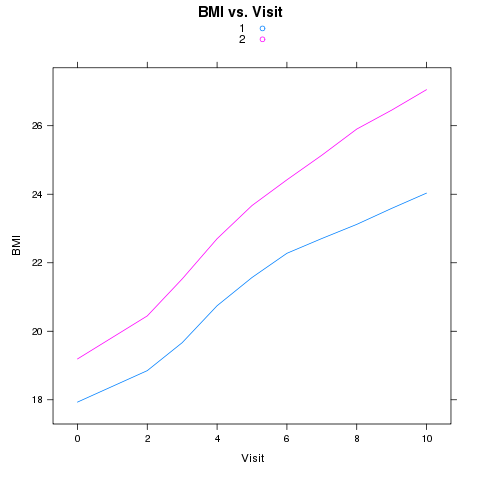

Programming in R
1 Operating on Groups of Data
We've already seen how the aggregate function let's us
calculate data summaries for groups in our data. For example,
using the world data set, we could find the average
value of each variable, broken down by continent:
> world = read.csv('http://www.stat.berkeley.edu/classes/s133/data/world2.txt',na.strings='.',comment='#')
> > names(world)
[1] "country" "cont" "gdp" "income" "literacy" "military" "phys"
[8] "un.date"
> aggregate(world[,-c(1,2,8)],world['cont'],mean,na.rm=TRUE)
cont gdp income literacy military phys
1 AF 2723.404 3901.191 60.52979 356440000 26.31129
2 AS 7778.049 8868.098 84.25122 5006536341 161.83381
3 EU 19711.765 21314.324 98.40294 6311138235 311.18482
4 NA 8946.667 10379.143 85.52000 25919931267 187.08178
5 OC 14625.000 15547.500 87.50000 4462475000 127.63105
6 SA 6283.333 6673.083 92.29167 2137341667 154.81088
Since the aggregate function requires the grouping variables to
be in a list, I took advantage of the fact that data frames are also
lists, and passed a single element (using single brackets) to
aggregate. Alternatively, I could have used a list directly:
> aggregate(world[,-c(1,2,8)],list(world$cont),mean,na.rm=TRUE)
Group.1 gdp income literacy military phys
1 AF 2723.404 3901.191 60.52979 356440000 26.31129
2 AS 7778.049 8868.098 84.25122 5006536341 161.83381
3 EU 19711.765 21314.324 98.40294 6311138235 311.18482
4 NA 8946.667 10379.143 85.52000 25919931267 187.08178
5 OC 14625.000 15547.500 87.50000 4462475000 127.63105
6 SA 6283.333 6673.083 92.29167 2137341667 154.81088
I would need to name the list element in order for its column in
the output to be properly labeled.
Now suppose I'd like to calculate both the mean and the median for
each continent:
> answer = aggregate(world[,-c(1,2,8)],world['cont'],function(x)c(mean(x,na.rm=TRUE),median(x,na.rm=TRUE)))
> answer
cont gdp.1 gdp.2 income.1 income.2 literacy.1 literacy.2
1 AF 2723.404 1400.000 3901.191 1813.000 60.52979 65.50000
2 AS 7778.049 4300.000 8868.098 4561.000 84.25122 89.90000
3 EU 19711.765 18150.000 21314.324 19804.000 98.40294 99.70000
4 NA 8946.667 4900.000 NA NA 85.52000 87.70000
5 OC 14625.000 13700.000 15547.500 14970.000 87.50000 96.40000
6 SA 6283.333 5000.000 6673.083 5563.500 92.29167 92.30000
military.1 military.2 phys.1 phys.2
1 356440000 101300000 26.31129 8.68680
2 5006536341 650000000 161.83381 139.92540
3 6311138235 1288500000 311.18482 317.88580
4 25919931267 147000000 187.08178 164.40130
5 4462475000 591500000 127.63105 128.11915
6 2137341667 742150000 154.81088 126.00035
There are eleven columns in the data, but when we look
at the dimensions of the result, things seem strange:
> dim(answer)
[1] 6 6
That's because aggregate stores each set of the two
values returned from the function we passed to it in matrices inside
the answer data frame:
> sapply(answer,class)
cont gdp income literacy military phys
"character" "matrix" "matrix" "matrix" "matrix" "matrix"
> names(answer)
[1] "cont" "gdp" "income" "literacy" "military" "phys"
> answer[,2]
[,1] [,2]
[1,] 2723.404 1400
[2,] 7778.049 4300
[3,] 19711.765 18150
[4,] 8946.667 4900
[5,] 14625.000 13700
[6,] 6283.333 5000
This actually makes it pretty easy to access the values that
we want. For example, suppose we want the mean for the variable
military. Since the mean was the first element returned by the
function we passed to aggregate, it's the first column in the
military matrix:
> data.frame(answer$cont,military.mean=answer$military[,1])
answer.cont military.mean
1 AF 356440000
2 AS 5006536341
3 EU 6311138235
4 NA 25919931267
5 OC 4462475000
6 SA 2137341667
The output from aggregate is often easier to use
if we give names to the values calculated by the function we pass to
aggregate. For example, if we call aggregate like this:
> answer = aggregate(world[,-c(1,2,8)],world['cont'],function(x)c(mean=mean(x,na.rm=TRUE),median=median(x,na.rm=TRUE)))
> answer
cont gdp.mean gdp.median income.mean income.median literacy.mean
1 AF 2723.404 1400.000 3901.191 1813.000 60.52979
2 AS 7778.049 4300.000 8868.098 4561.000 84.25122
3 EU 19711.765 18150.000 21314.324 19804.000 98.40294
4 NA 8946.667 4900.000 10379.143 6753.000 85.52000
5 OC 14625.000 13700.000 15547.500 14970.000 87.50000
6 SA 6283.333 5000.000 6673.083 5563.500 92.29167
literacy.median military.mean military.median phys.mean phys.median
1 65.50000 356440000 101300000 26.31129 8.68680
2 89.90000 5006536341 650000000 161.83381 139.92540
3 99.70000 6311138235 1288500000 311.18482 317.88580
4 87.70000 25919931267 147000000 187.08178 164.40130
5 96.40000 4462475000 591500000 127.63105 128.11915
6 92.30000 2137341667 742150000 154.81088 126.00035
Now we can say, for example:
> data.frame(cont=answer$cont,literacy.median=answer$literacy[,'median'])
cont literacy.median
1 AF 65.5
2 AS 89.9
3 EU 99.7
4 NA 87.7
5 OC 96.4
6 SA 92.3
Another way to manage the output from aggregate takes advantage
of the fact that when the data.frame function is called with
multiple data frames, it doesn't store the data frames as separate columns,
but rather makes one big data frame with lots of columns. So if we
convert each of the matrices to data frames we can combine all of them
into one big data frame:
> answer1 = data.frame(answer[,1],data.frame(answer[,2]),data.frame(answer[,3]),data.frame(answer[,4]),data.frame(answer[,5]),data.frame(answer[,6]))
> answer1
answer...1. mean median mean.1 median.1 mean.2 median.2 mean.3
1 AF 2723.404 1400 3901.191 1813.0 60.52979 65.5 356440000
2 AS 7778.049 4300 8868.098 4561.0 84.25122 89.9 5006536341
3 EU 19711.765 18150 21314.324 19804.0 98.40294 99.7 6311138235
4 NA 8946.667 4900 10379.143 6753.0 85.52000 87.7 25919931267
5 OC 14625.000 13700 15547.500 14970.0 87.50000 96.4 4462475000
6 SA 6283.333 5000 6673.083 5563.5 92.29167 92.3 2137341667
median.3 mean.4 median.4
1 101300000 26.31129 8.6868
2 650000000 161.83381 139.9254
3 1288500000 311.18482 317.8858
4 147000000 187.08178 164.4013
5 591500000 127.63105 128.1191
6 742150000 154.81088 126.0003
> dim(answer1)
[1] 6 11
We'd need to rename the columns, but there are now
actually eleven columns as we would expect. Of course, we wouldn't want
to do all that typing in practice. We would use some of R's powerful
tools to automate the process. For example, we could try to use
sapply to
convert all the matrices to data frames
> sapply(answer[,-1],data.frame)
gdp income literacy military phys
mean Numeric,6 Numeric,6 Numeric,6 Numeric,6 Numeric,6
median Numeric,6 Numeric,6 Numeric,6 Numeric,6 Numeric,6
As we've seen before this is usually an indication that
sapply has simplified things too much. If we try
lapply, this is what we get:
> lapply(answer[,-1],data.frame)
$gdp
mean median
1 2723.404 1400
2 7778.049 4300
3 19711.765 18150
4 8946.667 4900
5 14625.000 13700
6 6283.333 5000
$income
mean median
1 3901.191 1813.0
2 8868.098 4561.0
3 21314.324 19804.0
4 10379.143 6753.0
5 15547.500 14970.0
6 6673.083 5563.5
We can convert the list to a data frame as follows:
> answer1= data.frame(answer[1],lapply(answer[,-1],data.frame))
> answer1
cont gdp.mean gdp.median income.mean income.median literacy.mean
1 AF 2723.404 1400 3901.191 1813.0 60.52979
2 AS 7778.049 4300 8868.098 4561.0 84.25122
3 EU 19711.765 18150 21314.324 19804.0 98.40294
4 NA 8946.667 4900 10379.143 6753.0 85.52000
5 OC 14625.000 13700 15547.500 14970.0 87.50000
6 SA 6283.333 5000 6673.083 5563.5 92.29167
literacy.median military.mean military.median phys.mean phys.median
1 65.5 356440000 101300000 26.31129 8.6868
2 89.9 5006536341 650000000 161.83381 139.9254
3 99.7 6311138235 1288500000 311.18482 317.8858
4 87.7 25919931267 147000000 187.08178 164.4013
5 96.4 4462475000 591500000 127.63105 128.1191
6 92.3 2137341667 742150000 154.81088 126.0003
As is often the case, R takes care of the names more effectively
than if we labouriously combined everything by hand.
All that would be left to make this a truly useful display is to add
the number of countries in each continent. Since this will be the same
for each variable, it's usually not a good idea to return this value in the
function you pass to aggregate. Instead, we can use the table,
as.data.frame, and merge functions as follows:
> counts = as.data.frame(table(world$cont))
> names(counts) = c('cont','N')
> merge(counts,answer1)
cont N gdp.mean gdp.median income.mean income.median literacy.mean
1 AF 47 2723.404 1400 3901.191 1813.0 60.52979
2 AS 41 7778.049 4300 8868.098 4561.0 84.25122
3 EU 34 19711.765 18150 21314.324 19804.0 98.40294
4 NA 15 8946.667 4900 10379.143 6753.0 85.52000
5 OC 4 14625.000 13700 15547.500 14970.0 87.50000
6 SA 12 6283.333 5000 6673.083 5563.5 92.29167
literacy.median military.mean military.median phys.mean phys.median
1 65.5 356440000 101300000 26.31129 8.6868
2 89.9 5006536341 650000000 161.83381 139.9254
3 99.7 6311138235 1288500000 311.18482 317.8858
4 87.7 25919931267 147000000 187.08178 164.4013
5 96.4 4462475000 591500000 127.63105 128.1191
6 92.3 2137341667 742150000 154.81088 126.0003
Even though aggregate can handle cases with more than one value
being calculated, it still can only work with one variable at a time.
There are two approaches to solve the cases where you need to work with
more than one variable.
The first, uses the split function that we've seen for making
boxplots.
Suppose we want to find the two variables with the highest correlation
within each continent. First, we can write a function that will find
the variables for with the highest correlation in a data frame:
hicorr = function(x){
x = x[,sapply(x,function(col)mode(col) == 'numeric' & class(col) != 'factor')]
cc = cor(x,use='complete.obs')
diag(cc) = 0
wh = which(cc == max(cc),arr.ind=TRUE)
c(rownames(cc)[wh[1]],colnames(cc)[wh[2]])
}
Now we can use sapply and split to
find the variables with the highest correlation in each continent:
> as.data.frame(t(sapply(split(world,world$cont),hicorr)))
V1 V2
AF phys military
AS income gdp
EU income gdp
NA income gdp
OC income gdp
SA income gdp
The other way to solve problems like this is with the by
function. The by function produces nicely formatted output,
but its output can be manipulated if necessary. Here's the basic
approach for a problem like this.
> byvals = by(world,world$cont,hicorr)
> byvals
world$cont: AF
[1] "phys" "military"
------------------------------------------------------------
world$cont: AS
[1] "income" "gdp"
------------------------------------------------------------
world$cont: EU
[1] "income" "gdp"
------------------------------------------------------------
world$cont: NA
[1] "income" "gdp"
------------------------------------------------------------
world$cont: OC
[1] "income" "gdp"
------------------------------------------------------------
world$cont: SA
[1] "income" "gdp"
Since each piece of the byvals object looks like part of
a data frame we want, we can use do.call with rbind:
> ans = do.call(rbind,byvals)
> ans
[,1] [,2]
AF "phys" "military"
AS "income" "gdp"
EU "income" "gdp"
NA "income" "gdp"
OC "income" "gdp"
SA "income" "gdp"
As another example of do.call, consider the task of sorting
a data frame by its first column, then using the second column to
break any ties, and so on for each ofthe columns of the data frame.
For example:
> x = data.frame(matrix(sample(1:5,100,replace=TRUE),ncol=5))
> head(x)
X1 X2 X3 X4 X5
1 4 4 1 3 4
2 2 4 2 4 1
3 1 1 1 3 2
4 4 3 3 2 2
5 5 2 2 4 3
6 4 2 5 4 5
Since a data frame is a list, with each element representing a column,
we can order the data frame as follows:
> x[do.call(order,x),]
X1 X2 X3 X4 X5
3 1 1 1 3 2
17 1 2 3 5 5
10 1 4 5 1 5
20 2 4 2 1 1
2 2 4 2 4 1
11 3 1 4 4 2
16 3 4 1 1 3
8 4 2 1 1 1
14 4 2 2 3 5
18 4 2 3 4 2
13 4 2 5 1 1
6 4 2 5 4 5
7 4 3 1 4 2
4 4 3 3 2 2
1 4 4 1 3 4
9 4 5 3 1 2
5 5 2 2 4 3
12 5 3 4 2 4
15 5 3 5 1 5
19 5 4 5 1 3
Another interesting R function is Reduce. This function
works with any binary function, that is, one which accepts two arguments,
and repeatedly applies the binary function until the list is reduced to
a single answer. One of the most important uses of Reduce is
to merge more than two data frames at a time. Suppose we have three
data frames that we wish to merge:
> one = data.frame(id=sample(LETTERS[1:10]),a=rnorm(10))
> two = data.frame(id=sample(LETTERS[1:10]),b=rnorm(10))
> three = data.frame(id=sample(LETTERS[1:10]),c=rnorm(10))
Of course, we could call merge twice:
> both = merge(one,two)
> both = merge(both,three)
But what if we had 20 such data frames:
> twenty = lapply(letters[1:20],function(i){
+ z = data.frame(id=sample(LETTERS[1:10]),rnorm(10))
+ names(z)[2] = i
+ z})
> twenty[[1]]
id a
1 D 1.9112203
2 F -0.7198699
3 J -0.4290842
4 E 0.7849467
5 B 1.5758446
6 I 0.4998762
7 H 0.3568294
8 A -0.8567896
9 G -0.7182695
10 C -0.6894396
> twenty[[2]]
id b
1 C 2.03416915
2 J 0.69535618
3 E -0.66387813
4 H -0.25343952
5 D -1.04782198
6 G 1.56147090
7 B -0.28126409
8 F -0.30900749
9 I 0.52277648
10 A 0.03841634
We simply pass Reduce the merge function and
the list of data frames, and it does the rest:
> all = Reduce(merge,twenty)
id a b c d e f
1 A -0.8567896 0.03841634 1.1137667 -0.6139491 -1.2893453 0.5760507
2 B 1.5758446 -0.28126409 0.2777182 -0.1615362 0.8221153 -0.3328126
3 C -0.6894396 2.03416915 0.6990830 0.9430438 -0.7059770 -0.1309771
4 D 1.9112203 -1.04782198 -0.1040303 0.2433795 0.7645007 -0.3161749
5 E 0.7849467 -0.66387813 0.0683588 -0.5752617 -0.4059950 -1.2280617
6 F -0.7198699 -0.30900749 -1.0955231 -0.8593922 0.1585112 0.5434146
g h i j k l m
1 1.1469512 1.8675396 -1.0730001 -0.6306937 2.5853058 0.2524264 0.67496861
2 0.3483675 0.6846907 -1.7896035 0.7710611 1.9890408 0.6174135 0.16124957
3 -0.9972951 -0.7140730 0.7919375 0.3678690 1.2336345 -0.2323708 -0.52465997
4 0.1179205 -0.1865189 -1.0364221 0.6013162 1.3426701 -0.3513651 0.48844598
5 -0.1171988 -0.1514659 0.2650891 0.1813734 0.9233442 -1.7945477 -0.07855065
6 -0.2897749 -0.5888773 1.8274135 -0.3195992 0.6230858 -0.4897521 -0.49559174
n o p q r s t
1 0.5551094 1.6335976 -1.6149968 -0.0601484 0.1622304 0.1624207 -1.1408366
2 1.3832478 -0.8993505 -0.3657969 -0.2817061 0.2501859 -0.2096964 -0.5082768
3 -0.7369804 0.2675346 -0.3801290 2.2369038 1.7701125 0.6809073 -1.1597869
4 1.4028788 -0.9317347 0.1623700 -2.8401085 -2.0066582 -0.5500940 1.9968541
5 -0.2516113 -1.1269027 2.2224559 -0.2109566 1.6218192 -0.7154724 1.8204627
6 2.0342595 -0.1864191 -0.7241448 1.4295025 -2.1206024 0.4883462 -0.1468977
Another useful R function is reshape. This function reorganizes data
in either the so-called wide or long format. In the wide format, all observations
for a single individual are recorded in one row of a data frame, while in the
long view, each observation is a separate row, with an additional variable to
identify the observation. For example, here is a data set, in long format,
representing test scores on several different observations:
> data = data.frame(id=rep(1:3,rep(3,3)),time=rep(1:3,3),x=rnorm(9))
> data
id time x
1 1 1 -0.85519374
2 1 2 -0.60227681
3 1 3 0.47671168
4 2 1 0.28097796
5 2 2 -2.20903570
6 2 3 0.08311228
7 3 1 -0.56753562
8 3 2 0.65588709
9 3 3 0.42419294
To convert to wide format, the following statements could
be used:
> reshape(data,idvar='id',timevar='time',v.names='x',direction='wide')
id x.1 x.2 x.3
1 1 -0.8551937 -0.6022768 0.47671168
4 2 0.2809780 -2.2090357 0.08311228
7 3 -0.5675356 0.6558871 0.42419294
Notice that not all possible combinations of observations
need to be present:
> data1 = data[-7,]
> reshape(data1,idvar='id',timevar='time',v.names='x',direction='wide')
id x.1 x.2 x.3
1 1 -0.8551937 -0.6022768 0.47671168
4 2 0.2809780 -2.2090357 0.08311228
8 3 NA 0.6558871 0.42419294
The missing observations are represented as NA in
the output data frame.
To illustrace the wide-to-long transformation, consider the
following data:
> data = data.frame(id = rep(1:3),x1=c(1,2,3),x2=c(10,20,30),x3=c(100,200,300))
> data
id x1 x2 x3
1 1 1 10 100
2 2 2 20 200
3 3 3 30 300
> reshape(data,idvar='id',varying=list(c('x1','x2','x3')),direction='long')
id time x1
1.1 1 1 1
2.1 2 1 2
3.1 3 1 3
1.2 1 2 10
2.2 2 2 20
3.2 3 2 30
1.3 1 3 100
2.3 2 3 200
3.3 3 3 300
The trickiest part is noticing that the names of the three varying variables
have to be placed in a list.
As another example of the use of reshape, consider a study looking at the
BMI (Body Mass Index) of girls over time, measured for two different races.
This data can be found in a tab-delimited file at http://www.stat.berkeley.edu/classes/s133/data/bmi.tab. The variables in the file are ID, RACE, BMI, and VISIT. Suppose we wish to produce a plot of the average BMI
versus visit, with separate lines for the two races. We could use xyplot
from the lattice package as follows:
> bmi = read.delim('http://www.stat.berkeley.edu/classes/s133/data/bmi.tab')
> avgbmi = aggregate(list(BMI=bmi$BMI),list(Race=bmi$RACE,Visit=bmi$VISIT),
+ mean,na.rm=TRUE)
> library(lattice)
> xyplot(BMI~Visit,group=Race,type='l',auto.key=TRUE,
+ main='BMI vs. Visit',data=avgbmi)
The plot appears below:

Now suppose we wish to calculate the correlations between the BMIs at the
different visits. The cor function expects all of the variables
for which we want the correlations to be separate columns in the data frame
we pass to the function. We can rearrange the data to make it suitable
for calculating the correlations by calling reshape as follows:
> bmi1 = reshape(bmi,idvar=c('ID','RACE'),timevar='VISIT',v.names='BMI',
+ direction='wide')
We can now calculate the correlations by race:
> by(bmi1,bmi1$RACE,function(x)cor(x[,-c(1,2)],use='complete.obs'))
bmi1$RACE: 1
BMI.0 BMI.2 BMI.3 BMI.4 BMI.5 BMI.6 BMI.7
BMI.0 1.0000000 0.9513181 0.9238520 0.8871666 0.8489529 0.8227992 0.8018502
BMI.2 0.9513181 1.0000000 0.9490917 0.9144459 0.8625492 0.8339581 0.8110637
BMI.3 0.9238520 0.9490917 1.0000000 0.9517413 0.9025264 0.8612542 0.8327787
BMI.4 0.8871666 0.9144459 0.9517413 1.0000000 0.9458218 0.9054674 0.8781602
BMI.5 0.8489529 0.8625492 0.9025264 0.9458218 1.0000000 0.9530917 0.9105118
BMI.6 0.8227992 0.8339581 0.8612542 0.9054674 0.9530917 1.0000000 0.9568980
BMI.7 0.8018502 0.8110637 0.8327787 0.8781602 0.9105118 0.9568980 1.0000000
BMI.8 0.7968433 0.8026011 0.8166798 0.8540803 0.8859762 0.9319712 0.9630340
BMI.9 0.7888784 0.7931164 0.8042629 0.8351485 0.8690846 0.9107269 0.9316619
BMI.10 0.7630397 0.7690169 0.7777677 0.8131666 0.8430350 0.8803034 0.8952306
BMI.8 BMI.9 BMI.10
BMI.0 0.7968433 0.7888784 0.7630397
BMI.2 0.8026011 0.7931164 0.7690169
BMI.3 0.8166798 0.8042629 0.7777677
BMI.4 0.8540803 0.8351485 0.8131666
BMI.5 0.8859762 0.8690846 0.8430350
BMI.6 0.9319712 0.9107269 0.8803034
BMI.7 0.9630340 0.9316619 0.8952306
BMI.8 1.0000000 0.9596225 0.9209648
BMI.9 0.9596225 1.0000000 0.9488572
BMI.10 0.9209648 0.9488572 1.0000000
------------------------------------------------------------
bmi1$RACE: 2
BMI.0 BMI.2 BMI.3 BMI.4 BMI.5 BMI.6 BMI.7
BMI.0 1.0000000 0.9628273 0.9281780 0.9010607 0.8646773 0.8410384 0.8173900
BMI.2 0.9628273 1.0000000 0.9607964 0.9334043 0.8940498 0.8730059 0.8543804
BMI.3 0.9281780 0.9607964 1.0000000 0.9656133 0.9300707 0.9081140 0.8886918
BMI.4 0.9010607 0.9334043 0.9656133 1.0000000 0.9605275 0.9378850 0.9130036
BMI.5 0.8646773 0.8940498 0.9300707 0.9605275 1.0000000 0.9722481 0.9465896
BMI.6 0.8410384 0.8730059 0.9081140 0.9378850 0.9722481 1.0000000 0.9751832
BMI.7 0.8173900 0.8543804 0.8886918 0.9130036 0.9465896 0.9751832 1.0000000
BMI.8 0.8051828 0.8423513 0.8746659 0.8979719 0.9293276 0.9561339 0.9769345
BMI.9 0.8003754 0.8389726 0.8689569 0.8868970 0.9147281 0.9410288 0.9582904
BMI.10 0.7862279 0.8224567 0.8464351 0.8640517 0.8894121 0.9157546 0.9316408
BMI.8 BMI.9 BMI.10
BMI.0 0.8051828 0.8003754 0.7862279
BMI.2 0.8423513 0.8389726 0.8224567
BMI.3 0.8746659 0.8689569 0.8464351
BMI.4 0.8979719 0.8868970 0.8640517
BMI.5 0.9293276 0.9147281 0.8894121
BMI.6 0.9561339 0.9410288 0.9157546
BMI.7 0.9769345 0.9582904 0.9316408
BMI.8 1.0000000 0.9767038 0.9460700
BMI.9 0.9767038 1.0000000 0.9675484
BMI.10 0.9460700 0.9675484 1.0000000
Not surprisingly, there's a very high correlation between the
BMI at the different visits for both races.
File translated from
TEX
by
TTH,
version 3.67.
On 28 Mar 2011, 23:44.